| 立命の家 〜 写真館 〜 |
|
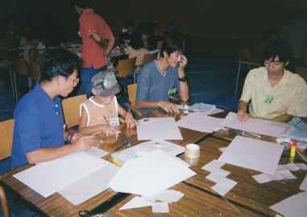
画用紙を使って算数パズル |
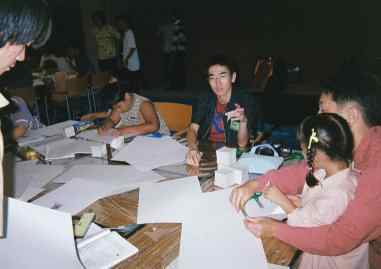
大学生のチューター（緑の名札）がこどもたちと一緒に実験に挑戦します |
|
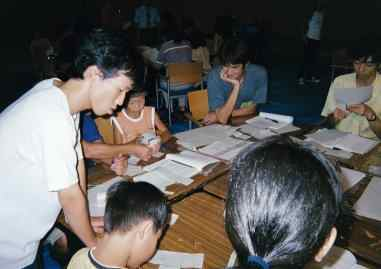
みんなで考えながら作っています |
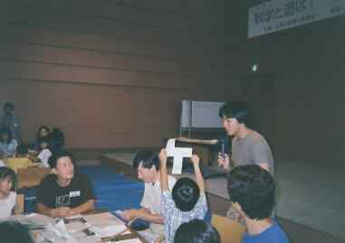
「できた！」 |
|
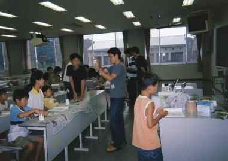
紙コップや脱臭剤などの身近な材料でマイクを作ります |
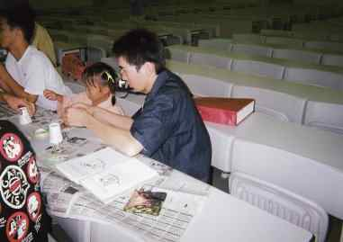
チューターも一緒に作っています |
|
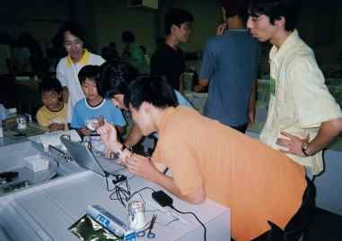
ノートパソコンに作成したマイクを接続し、波形を表示できます |
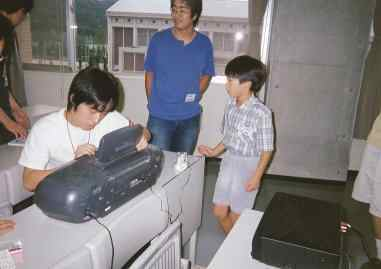
ラジカセで声を録音します |
|
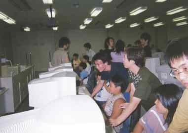
みんなで楽しくパソコン教室 |
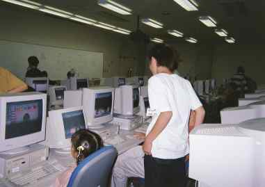
画面に映るRCC特製プリクラソフトでオリジナルのプリクラを作ります |
|
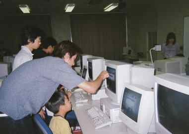
大学生のチューターたちが親切に教えます |